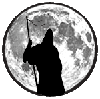

|

|
>> Содержание / Список кланов /
 Searchers Searchers
...Незнакомец в черном плаще с капюшоном сидел у костра. Задумчиво глядя на пламя , которое отражалось в его глазах, он вспоминал крики погибающих друзей, стекающую с клинка кровь тех, кто оказался с другой стороны, вспоминал тех, кто когда-то был рядом. Битвы за идею, за Свет, за Тьму, Битвы во имя справедливости и чести. Лица погибших друзей вставали у него перед глазами, через пламя костра он вглядывался в их глаза. В те глаза, которые не умели врать. Предательства, самопожертвование, звон монет - всё это было и есть в этом мире и каждому остаётся лишь сделать выбор - правильный или нет - это будет понятно позже..Главное - чтобы выбор был СВОЙ и свободный, а не чужой. Худощавое иссеченное шрамами лицо исказилось гримасой боли, он тщетно пытался понять - зачем все это нужно?..
"Каждый идет к Истине своим Путем, и в конце этого пути станет ясно, кто чего стоит. Видимо и нам придется делать выбор", - подумал он,- "Искать свой путь в этом мире. В нас есть свобода выбора от Тьмы и чувство справедливости от света..Чувство чести, собственного достоинства и равновесия от нейтралов..Мы те, кому не хватило света в душе, чтобы стать Нейтралом или Светлым и Тьмы, чтобы выбрать сторону Тьмы..
У нас - свой Путь. У каждого - свой.Но слишком много переплетений в этих дорогах, чтобы идти порознь, поэтому мы идем вместе. Каждый из нас будет добавлять что-то свое в мозаику и многогранность реальности и Истины. Наша цель - поиск и познание того Мира, в который мы пришли. Мы постараемся быть над схваткой Порядка и Хаоса, наблюдать за ней со стороны и вмешиваться в неё только по зову сердца.Получится ли? Но попытаться стоит.. "
...Незнакомец встал, глаза блеснули желтым отблеском костра. На ладони засветился шар, внутри проявилась мерцающая призма, шар оторвался от ладони, а в центре призмы загорелось пламя.
В тишине зазвучал ровный холодный металлический голос.
"Пусть грани призмы символизируют каждого из нас - таких разных, шар - бесконечность вселенной, в которой мы существуем, пламя - Истину, к которой мы стремимся ... И пусть каждый из нас вложит частичку своей Души в это пламя и оно станет настолько большим, что дыхание Истины коснется каждого из нас и будет нас объединять.!"
Родственные души, действующие так, как подсказывает сердце.
Мы все и никто,нас нет и в то же время мы везде..
Голос стих.... за ним эхо.
Это было наше рождение.
Официальный сайт клана: http://www.searchers.odecca.net/
|
 |
|